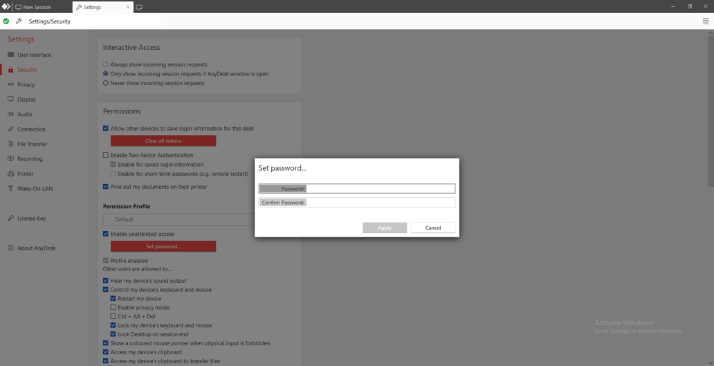
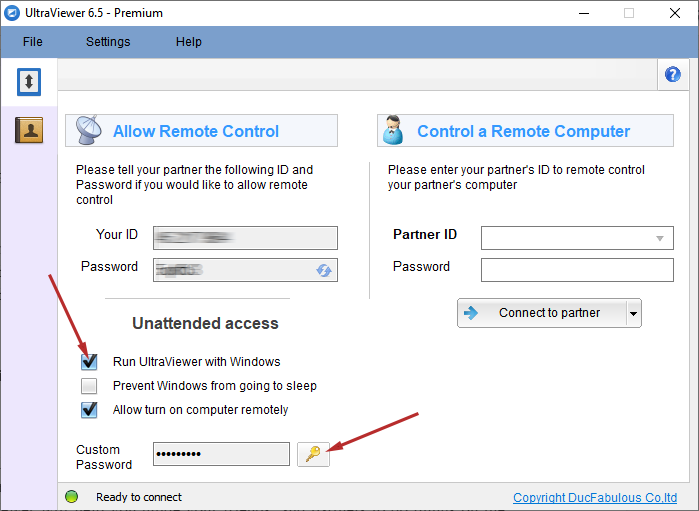

AnyDesk Unattended Access Not Working? How to Fix It Fast!
AnyDesk is a popular remote desktop tool that provides a powerful feature: Unattended Access. This feature allows users to connect to remote devices without needing someone to accept the connection manually. However, when AnyDesk Unattended Access not working, it can be frustrating, especially if you rely on remote connections for work or personal tasks. In this guide, we'll discuss the common reasons why this issue occurs and provide you with practical solutions to resolve it. Additionally, we’ll introduce UltraViewer as a simple and effective alternative for remote access that’s easy to set up and use.
Reasons and How to Fix AnyDesk Unattended Access Not Working
1. Incorrect Configuration Settings
One of the most common reasons for AnyDesk Unattended Access not working is improper configuration. If the settings are not correctly enabled, you might experience issues with connecting remotely.

Solution:
To fix this, follow these steps to verify your configuration:
- Open AnyDesk on the remote device you wish to access.
- Go to Settings and click on Security.
- Ensure that Unattended Access is enabled.
- Set a secure password for the remote session to allow automatic login without requiring approval.
- Additionally, check the permissions for the remote device to ensure that it grants all necessary rights for input control, clipboard access, and display sharing.
By ensuring these configurations are set properly, you can restore the Unattended Access functionality.
2. Network Connectivity Issues
Unstable or poor internet connections are another major cause of AnyDesk Unattended Access failing. If either the local or remote device has a weak or intermittent connection, it will affect your ability to establish a remote session.
Solution:
Here’s how to address network-related issues:
- First, ensure both devices (the one you're connecting from and the one you're connecting to) have stable internet connections.
- Check if there are any network restrictions, especially if you’re using a VPN or are behind a corporate firewall.
- If you’re on a local network, ensure that ports necessary for AnyDesk (usually TCP 6568) are open. You might need to check your router settings or contact your network administrator.
- If the connection is unstable, try restarting your router or modem to improve network stability.
These steps should help resolve any connectivity-related problems and allow uninterrupted remote access.
3. Firewall or Antivirus Blocking AnyDesk
Security software, including firewalls and antivirus programs, can sometimes block AnyDesk’s ability to connect remotely. Firewalls might prevent AnyDesk from accessing the necessary ports, and antivirus software may incorrectly identify AnyDesk as a security threat.
Solution:
To fix this, you need to whitelist AnyDesk in both your firewall and antivirus settings:
- Open the Windows Defender Firewall settings (or your third-party firewall software).
- Go to Allow an app or feature through Windows Defender Firewall.
- Find AnyDesk in the list and make sure it is checked for both Private and Public networks.
- Also, check your antivirus settings to ensure AnyDesk is not being flagged as a threat and is added to the exception list.
Once AnyDesk is whitelisted, it should be able to establish a connection without any interruptions.
4. Permission Settings on the Remote Device
If the remote device doesn’t have the correct permissions enabled for unattended access, AnyDesk won’t allow the connection to happen. This could be because the user has not granted access for the required input or display.
Solution:
To resolve this:
- On the remote device, go to Settings > Security.
- Make sure that unattended access is checked and that appropriate permissions are enabled for remote input and display.
- You may need to provide access for things like keyboard and mouse input or clipboard sharing, depending on your use case.
By reviewing and updating the permissions, you can ensure that remote access functions as intended.
5. Outdated AnyDesk Version
An outdated version of AnyDesk may have bugs or lack important updates that are required to support new features like unattended access
Solution:
It’s important to keep AnyDesk up to date. To resolve this issue:
- Visit AnyDesk’s official website and download the latest version of the software for both local and remote devices.
- After updating, restart both devices to ensure that the latest changes take effect.
Updating to the most recent version will fix bugs and improve performance, allowing unattended access to work smoothly.
6. Operating System Compatibility Issues
Compatibility problems between AnyDesk and your operating system can sometimes cause unattended access to fail. This may occur if your system is running an unsupported version of Windows, macOS, or Linux.
Solution:
Ensure that your operating system is compatible with the version of AnyDesk you are using:
- Check AnyDesk’s system requirements to confirm compatibility.
- Update your operating system to the latest version to avoid compatibility issues.
If the issue persists, consider upgrading to a more recent version of your OS to improve stability and compatibility.
7. User Authentication Errors
Authentication errors, such as incorrect login credentials or mismatched passwords, can also prevent unattended access from functioning properly.
Solution:
To fix authentication issues:
- Go to Settings > Security in AnyDesk and verify that your password is correct.
- Reset the password if necessary and ensure that you are using the right credentials to log in.
Once the correct credentials are in place, you should be able to connect without issues.
Additional Tips for a Smooth Remote Connection
- Test Before Critical Use: Before using unattended access for important tasks, run a test connection to make sure everything is working smoothly.
- Backup Settings: Regularly backup your AnyDesk settings, including password and access configurations, to avoid losing them if any issues occur.
- Use Reliable Networks: Always use a stable and secure network for remote connections, especially when handling sensitive data.
Try Another Free Unattended Remote Access Software: UltraViewer

If you continue to experience issues with AnyDesk Unattended Access not working, or if you’re simply looking for a simpler solution, UltraViewer is an excellent alternative. UltraViewer is a user-friendly remote access tool that provides an intuitive and seamless experience, allowing you to set up unattended access effortlessly.
Why Choose UltraViewer?
- Free and Unlimited Access: UltraViewer offers free remote access for both personal and commercial use without any restrictions. Whether you’re working on personal projects or running a business, UltraViewer ensures you can connect remotely without any limitations or hidden fees.
- Ease of Use: The interface is clean, straightforward, and perfect for users who need quick and reliable access to remote devices. Even beginners will find it easy to navigate and set up.
- Reliable Connection: UltraViewer ensures a stable connection, even in environments with low bandwidth, making it ideal for users with less reliable internet connections.
- Fast Setup for Unattended Access: Setting up unattended access is a breeze with UltraViewer. Simply enable the feature, set a secure password, and you're ready to remotely control your device without the need for constant approval.
UltraViewer not only allows remote access for personal use but also offers unlimited access for business applications. This makes it a perfect solution for both individual and commercial purposes.
Learn more about how to set up unattended access on UltraViewer and download UltraViewer Free now today!!
Dealing with AnyDesk Unattended Access not working can be frustrating, but with the solutions outlined above, you should be able to resolve the issue quickly. From network problems to configuration errors, we’ve covered common causes and provided actionable solutions. However, if you're looking for an easy-to-use alternative, UltraViewer offers a seamless experience with an intuitive setup for unattended access. Try it today and enjoy hassle-free remote connections!


Write comments (Cancel Reply)